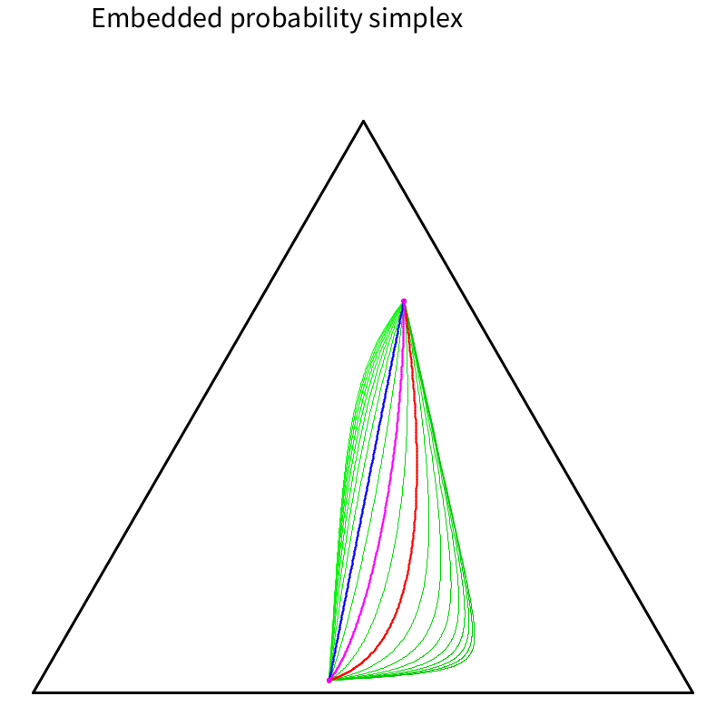
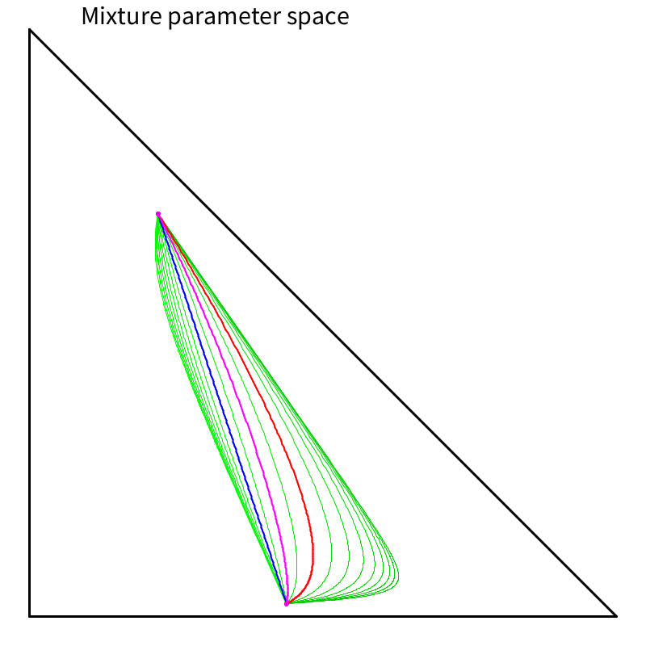
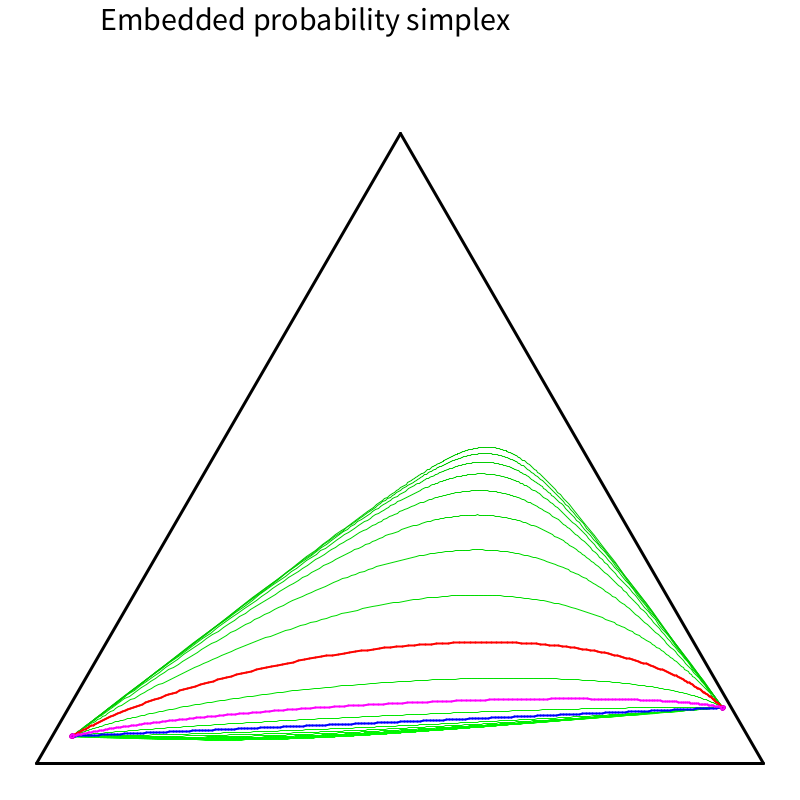
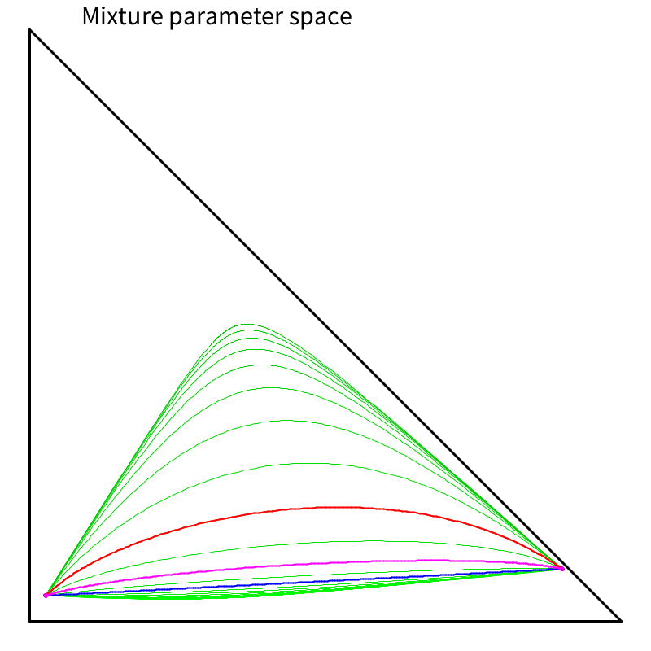

<h1>α-geodesics in the probability simplex</h1>

<ul>
<li>Demo movie: <A HREF="AlphaGeodesicsProbabilitySimplex.mp4" target="_blank">AlphaGeodesicsProbabilitySimplex.mp4</A>
   <A HREF="https://www.youtube.com/watch?v=nu1evlvR7KI" target="_blank">Youtube</A>
<li>Example 1: <A HREF="AlphaGeo-Ex1-embedded.pdf" target="_blank">
AlphaGeo-Ex1-embedded.pdf</A>
<A HREF="AlphaGeo-Ex1-mixparam.pdf" target="_blank">
AlphaGeo-Ex1-mixparam.pdf</A>

<li>Example 2: <A HREF="AlphaGeo-Ex2-embedded.pdf" target="_blank">
AlphaGeo-Ex2-embedded.pdf</A>
<A HREF="AlphaGeo-Ex2-mixparam.pdf" target="_blank">
AlphaGeo-Ex2-mixparam.pdf</A>

<li>Related paper: <A HREF="https://www.mdpi.com/1099-4300/16/6/3273">On Clustering 
Histograms with k-Means by Using Mixed α-Divergences</A>, Entropy 2014.
 


</ul>
<hr>
